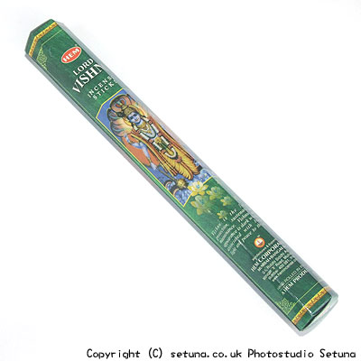

ヘム社/ヴィシュヌ香
HEM LORD VISHNU
そのまま匂いを嗅ぐとシトラス系のいいにおいです。
清涼感もあり、爽やかな香りです。
カンラン科の爽やかさを感じ取れます。
火を点けると青っぽい感じの香りが広がり始めます。
少し清涼感もあり、表現しにくい不思議な香りです。
時間が経つにつれ白檀に似た香りが、そして木の実をローストしたような香りが混ざり始めて、松の木を燃やした時のような香りに変化します。
香りは部屋の中間層辺りをメインに漂っているような感じです。
ただそこにあるのが当たり前。
そんな感じのするお香とでも云えば良いのでしょうか？心地良いまったりとした懐かしさに包まれます。
華やかでもなく、甘くもなくスパイシーでもなく、ただふんわりと木々や葉、田畑を思い出すような清涼感のあるグリーン系の香りがゆったりと漂い続けます。
焚き終わりは一体いつの間に分からないほど静かに終わってゆきます。

＜合わせ焚きのできるお香＞
- 「ドゥルガー香」
- 少しすっぱい感じのオレンジの香りが完熟したオレンジのような甘い香りに変化します。
- 「マグノリア香」
- 優しく甘みを帯び軽く爽やかな花の香りに・・・
- 「アーモンド香」
- ココナツっぽさが消えてアーモンドそのままの香りに・・・
- 「アロエベラ香」
- 爽やかなレモンミルクの香りに・・・
- 「ベルガモット香」
- ナッツ系リキュールのような香りに・・・
「エジプシャンジャスミン」- マグノリアに似た優しい香りに・・・
- 「ミルラ香」
- 白檀系の香りに・・・
- 「乳香」
- ヒノキっぽい、ちょっと甘めのウッド系の香りに・・・
- 「シナモン香」
- アーモンドのような香りに・・・
- 「レモングラス香」
- 土っぽさが消え、甘く優しいレモンの花のような香りに・・・
- 「ヘナ香」
- 独特のキツさが消え、甘くまろやかな香りに・・・
さすがは三柱神の中の「ヴィシュヌ神」の名前を選んだだけはあります。
10変化以上します(汗)他多数ありますが書ききれません・・・
＜勇気のある人にぜひともチャレンジして欲しい焚き合わせ＞
「ヴィシュヌ香」＋「ラクシュミー香」＋「アーモンド香」＋「イランイラン香」
四本炊きですので換気は絶対して下さい！それと一本でも欠けている時は止めましょう！
なんとまぁ、「グリコのアーモンドキャラメル」の香りになります(大笑！)
ヴィシュヌ神様も女神ラクシュミー様と一緒になっていただいた時は苦労された?ようですが、お香の方も一緒に焚くのに一苦労でした。
しかし、お子様大好き系の香りが出来上がるとは思いもよりませんでしたね(笑)。
一つ前のページへ戻る